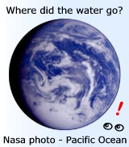

 Most popular
pages
Most popular
pages

|
These features work together to control the Ark, using the wind (Gen 8:1) to maintain direction and avoid broaching. > See video demonstrations here |
|
Miracles are in the story, yet Noah obviously built a real ship. So how can we determine what was a miracle and what wasn't? > See More here |
|

|
But what evidence do we have today? How well does Mt Ararat fit with the Bible? > See More here |
|
> Section Modulus Comparison here > Compare more ships here. |
|
Download and take a tour. (5.8MB PC only) |
|
|
Q: Everyone knows about Noah's Ark, but what about Moses' Ark?
Same word in the Hebrew.
What a fluke!
- Construction time is sufficient
...even the ceiling height is about right!
So if this is an embellished story of a reed barge on a flooded river, why would the numbers make sense in a hydrodynamic study?

Optimal Proportions. Why ships tend to look like ships. Interactive Flash
Want to build an ark?
See Ark Modelers for ideas...